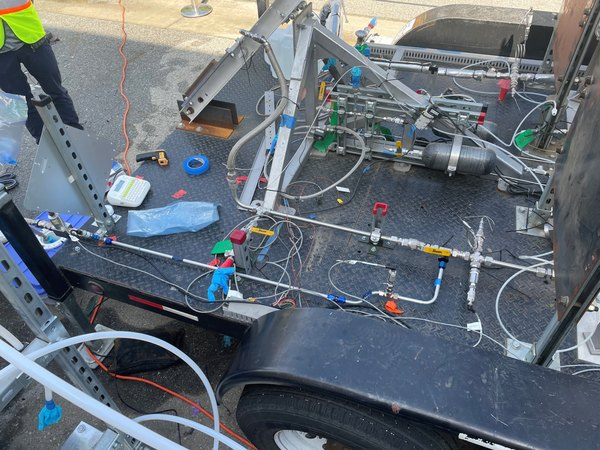
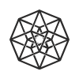
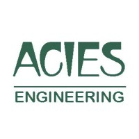
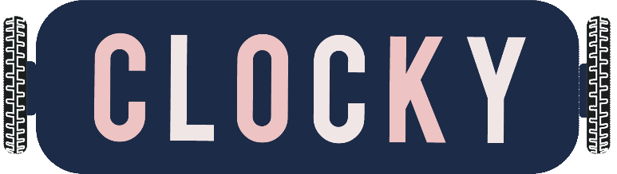

Robotics & controls
ORBES robot: ±5° attitude hold on hardware
Hanging tests, sensor alignment and motor-command diagnostics.
±5° attitude hold on hardware
Explore ORBESMechanical & Simulation Engineer
Robotics, rockets, and building systems, from first principles through simulation, fabrication, and test.
Engineering background
Hardware, controls and the decisions between.
Robotics & controls
Hanging tests, sensor alignment and motor-command diagnostics.
±5° attitude hold on hardware
Explore ORBESUC Berkeley / Honeywell
Multi-body dynamics and passive versus active mitigation strategies.
Arc-second-scale hold in a simplified disturbance model
Explore satellite jitter analysis
Photo: CPP B1LV teamCPP Liquid Rocket Lab / B1LV
Contributed to piping organization, LOX-cleaning preparation and pressurant concept comparisons, with hardware traceability and shared failure analysis.
Explore the Bronco 1 case studyMechanical and simulation engineer with about two years of industry experience, plus internships and four years of student rocket and capstone projects. I've validated CFD and FEA pipelines, tuned reaction-wheel control on a free-flying robot, designed commercial HVAC systems, and contributed to a liquid rocket's feed-system test readiness.



Systems architecture, reaction-wheel dynamics and mission studies, with a path into ROS2 integration.
Attitude control tested on a separate reaction-wheel platform.
Rocket projects: Bronco 1, Enterprise E-2 and the FAR 51025 competition.
Hover, focus or tap a sector or project heading to highlight its project and view the full logo.
Bronco 1 / CPP Liquid Rocket Lab
Vehicle project emblem
Rocket engineering projects
Singularity student rocket project for the Friends of Amateur Rocketry competition.